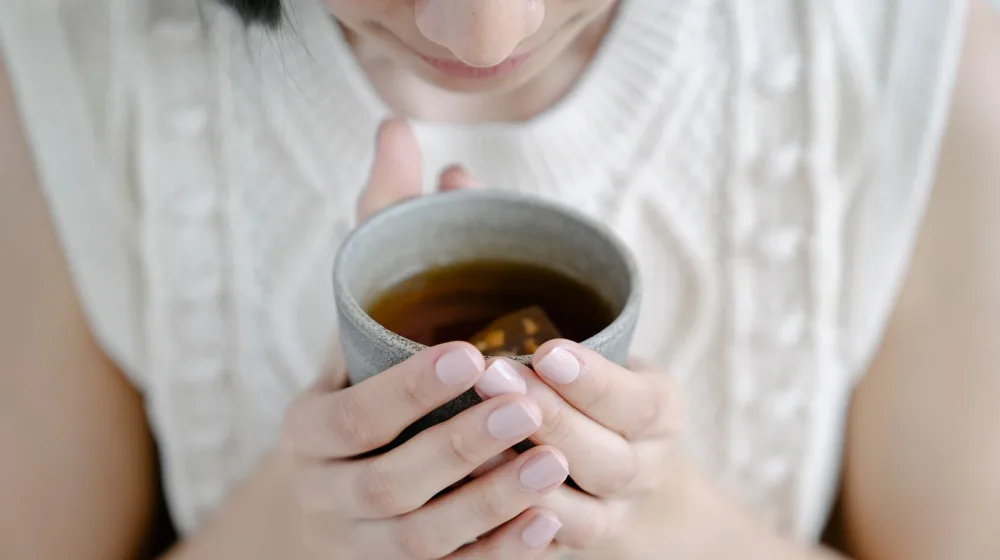

내 몸에 맞는 음식은? 사상체질별 약이 되는 음식 체크리스트
사진: Leeloo The First / Pexels (무료 이미지, 출처 표기)
사상체질, 왜 나에게 맞는 음식을 알아야 할까?

남들이 몸에 좋다고 극찬하는 보양식을 먹었는데 오히려 속이 더부룩하거나 피부에 트러블이 생겼던 경험이 있으신가요? 이는 자신의 사상체질(조선 후기 의학자 이제마가 창시한 체질 의학)에 맞지 않는 음식을 섭취했기 때문일 가능성이 큽니다.
한의학에서는 사람의 체질을 장부의 대소 허실에 따라 태양인, 태음인, 소양인, 소음인 네 가지로 분류합니다. 나에게 '약'이 되는 음식이 다른 사람에게는 '독'이 될 수 있으므로, 나의 체질적 약점을 보완해 줄 수 있는 식재료를 선택하는 것이 건강 관리의 핵심입니다.
나의 사상체질은 무엇일까? 체질별 신체 특징
한국한의학연구원의 자료에 따르면 체질은 용모, 체형, 성격, 그리고 병증 등을 종합적으로 고려하여 판단합니다. 완벽한 진단은 전문 한의사의 진찰이 필요하지만, 아래의 일반적인 신체적 특징을 통해 나의 체질을 짐작해 볼 수 있습니다.
- 태양인(폐대간소): 가슴 윗부분과 목덜미가 발달했으나 엉덩이와 하체가 상대적으로 빈약한 편입니다. 머리가 크고 이목구비가 뚜렷한 편에 속합니다.
- 태음인(간대폐소): 골격이 굵고 체구가 큰 편이며 기침이나 호흡기 질환에 취약합니다. 조금만 움직여도 땀을 많이 흘리는 특징이 있습니다.
- 소양인(비대신소): 가슴 부위가 넓고 엉덩이 부위가 빈약하여 서 있는 자세가 다소 불안정해 보일 수 있습니다. 몸에 열(상열감: 열이 위로 오르는 느낌)이 많아 찬 음식을 선호합니다.
- 소음인(신대비소): 상체에 비해 엉덩이와 골반 부위가 발달했습니다. 체구는 보통 작은 편이며 소화 기능이 약하고 손발과 몸이 찬 편입니다.
사상체질별 추천 음식 & 피해야 할 음식 핵심 요약
각 체질의 부족한 기운을 채우고 넘치는 기운을 깎아주는 맞춤형 식재료 가이드입니다. 평소 식단을 구성할 때 참고하시면 소화 기능을 개선하고 면역력을 높이는 데 도움을 얻을 수 있습니다.
체질 맞춤 식단을 시작할 때 반드시 주의할 점
자가진단만으로 자신의 체질을 100% 확신하고 특정 음식만 편식하는 것은 오히려 영양 불균형을 초래할 수 있어 위험합니다. 인간의 체질은 한 가지만 뚜렷하게 나타나기보다 여러 체질의 특성이 섞여서 나타나는 경우가 많기 때문입니다.
체질에 맞는 식단을 실천하더라도 평소 소화 상태나 컨디션 변화를 세심하게 관찰해야 합니다. 아무리 소음인에게 생강이 좋다고 해도 평소 위염이 심하거나 속 쓰림이 있다면 섭취량을 줄여야 합니다. 2026년 8월 기준 최신 한방 임상 가이드에서도 환자의 개인별 증상과 병증을 체질 의학보다 우선시하여 처방할 것을 권장하고 있습니다.
체질 맞춤 식단은 건강을 돕는 보조적인 수단으로 삼고, 만성 질환이 있거나 정확한 체질 감별을 원하신다면 가까운 한의원에 내원하여 전문 한의사의 진단을 받으시길 권장합니다.
자주 묻는 질문(FAQ)으로 푸는 체질 식단 궁금증
많은 분이 궁금해하시는 사상체질 식단과 관련된 대표적인 질문들을 모았습니다.
Q1. 체질은 자라면서 혹은 나이가 들면서 변하나요?
사상체질 의학 관점에서 타고난 선천적 체질은 평생 변하지 않는 것으로 봅니다. 다만 나이가 들거나 건강 상태, 생활 습관에 따라 겉으로 드러나는 증상이나 약한 부위가 달라질 수는 있습니다. 체질 자체가 변한 것이 아니라 몸의 균형이 깨진 것이므로 본래 체질에 맞는 관리가 필요합니다.
Q2. 가족들의 체질이 모두 제각각인데 국과 반찬은 어떻게 준비해야 할까요?
매번 체질별로 밥상을 따로 차리는 것은 현실적으로 불가능합니다. 이럴 때는 누구에게나 무난한 쌀밥과 둥글레차 등을 기본으로 하되, 메인 요리나 고명, 소스를 다르게 준비하는 지혜가 필요합니다. 예를 들어 고기 요리를 할 때 소음인에게는 따뜻한 성질의 부추를 곁들이고, 소양인에게는 서늘한 성질의 쌈 채소를 풍성하게 곁들여 각자 체질에 맞는 음식을 조절해 먹도록 돕는 것이 좋습니다.
🔗 이 글도 함께 보면 좋아요: 내 몸에 맞는 한방차 재료, 실패 없이 소싱하는 4가지 방법
관련 추천 상품
이 포스팅은 쿠팡 파트너스 활동의 일환으로, 이에 따른 일정액의 수수료를 제공받습니다.
자주 묻는 질문(FAQ) (탭하면 펼쳐져요)
Q1. 체질은 자라면서 혹은 나이가 들면서 변하나요?
A. 사상체질 의학 관점에서 타고난 선천적 체질은 평생 변하지 않는 것으로 봅니다. 다만 건강 상태나 생활 습관에 따라 겉으로 드러나는 증상이 달라질 수 있으며, 이는 체질 자체가 변한 것이 아니라 몸의 균형이 깨진 것이므로 본래 체질에 맞는 관리가 유지되어야 합니다.
Q2. 가족들의 체질이 모두 제각각인데 국과 반찬은 어떻게 준비해야 할까요?
A. 매번 식사를 따로 준비하기 어렵다면 누구나 편하게 먹을 수 있는 기본 음식을 중심으로 구성하되, 고명이나 쌈 채소, 소스 등을 다양하게 준비하여 각자 체질에 맞춰 곁들여 먹을 수 있도록 조절하는 방법을 추천합니다.